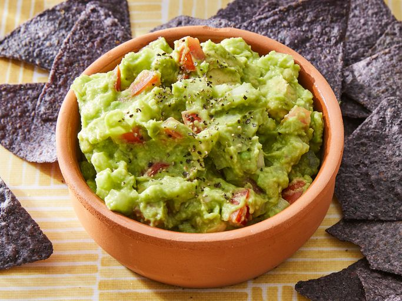

Image by Dotdash Meredith Food Studios
Place the guacamole in an airtight container, then cover the top with a thin layer of water, lemon juice, or lime juice (the barrier will keep air from getting in, preventing browning). Store in the refrigerator for up to two days.